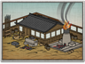

Requires
- Buildings: 
- Arts:

Enables
- Buildings:

- Units:


Basic Building Statistics (can be modified by difficulty level, arts, skills, traits and retainers)
- Cost: 1550
Description
Hellfire confined is not hellfire tamed.
This building allows the training of horoku units. Gunpowder is notoriously tricky stuff to make safely, and there is more art to it than many would suspect. The ingredients used, their individual preparation, and the proportions needed for the final mix are all jealously guarded secrets. The final stages, when the powder is mixed with water, dried out, and then carefully ground to the correct size are particularly dangerous. One spark will spell disaster, particularly in Japan where so many buildings are made of wood! Although the Japanese had been on the receiving end of gunpowder weapons in the 13th century, courtesy of the Mongols, they chose not to use them in warfare. This was unusual, as the Japanese had not been particularly reticent about taking Chinese ideas of all kinds, refining them, and producing a distinctly excellent local version of all kinds of things. Striking down enemies at a distance with little chance of reply did not, however, easily sit within the samurai concept of bushido. It was one thing to shoot someone with an arrow, quite another to blow an enemy to small pieces.